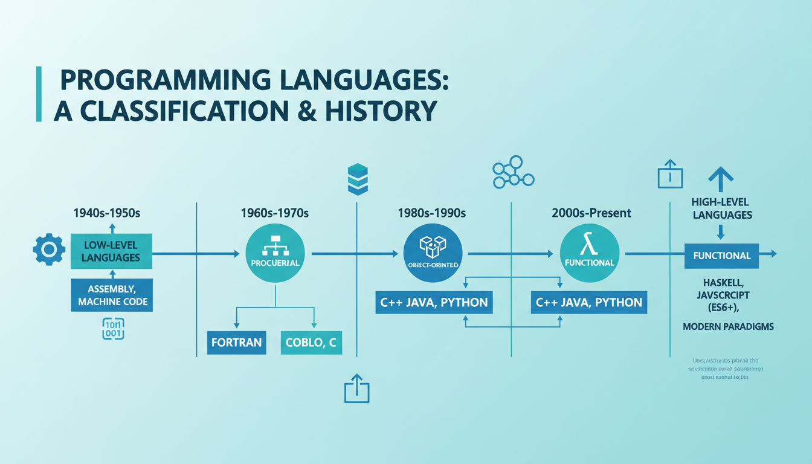

Що таке мова програмування
Мова програмування — це штучна мова, створена для передачі команд комп'ютерам. Вона визначає набір лексичних, синтаксичних і семантичних правил, що використовуються при написанні комп'ютерних програм.
Мова програмування дозволяє програмісту точно визначити, на які дані буде оперувати комп'ютер, як ці дані зберігатимуться і передаватимуться, і які дії слід виконувати над ними залежно від обставин.
Мова програмування — формальна знакова система, призначена для опису алгоритмів у формі, придатній для виконання обчислювальною машиною.

Мова програмування характеризується трьома основними компонентами:
- Алфавіт — набір допустимих символів
- Синтаксис — правила побудови мовних конструкцій
- Семантика — правила тлумачення конструкцій
Інтегроване середовище розробки (IDE)
Інтегроване середовище розробки (IDE) — це програмний комплекс, що включає редактор вихідного коду, компілятор, засоби автоматизації збирання та відладчик.
Основні складові IDE:
- Текстовий редактор — для написання коду з підсвічуванням синтаксису
- Компілятор — для перетворення коду в машинні інструкції
- Відладчик (Debugger) — для пошуку та виправлення помилок
- Бібліотеки — готові модулі та функції
- Інструменти автоматизації — для збирання та розгортання проєктів
- Visual Studio — потужне середовище від Microsoft
- Code::Blocks — безкоштовне кросплатформенне IDE
- CLion — професійне IDE від JetBrains
- Dev-C++ — просте і зручне для початківців
Історія мов програмування
Розвиток мов програмування розпочався у 1940-х роках. Розглянемо основні віхи:
Перше покоління (1940-1950)
Перші комп'ютери програмувались безпосередньо у машинних кодах — послідовностях двійкових чисел. Це було надзвичайно складно і незручно.
Друге покоління (1950-1960)
З'явилися мови асемблера, які використовували символічні імені замість числових кодів операцій. У цей період були створені перші високорівневі мови — Fortran (1957) та COBOL (1959).
Третє покоління (1960-1970)
Період створення універсальних мов програмування: ALGOL (1960), BASIC (1964), Pascal (1970), C (1972). Мова C, розроблена Деннісом Рітчі в Bell Labs, стала основою для багатьох сучасних мов.
Четверте покоління (1980-1990)
Поява об'єктно-орієнтованого програмування: C++ (1985, Б'ярн Страуструп), Objective-C (1986), а пізніше — Java (1995). C++ розширив мову C механізмами класів, успадкування, поліморфізму та інкапсуляції.
П'яте покоління (1990-дотепер)
Розвиток скриптових мов (Python, JavaScript, PHP), функціональних мов (Haskell) та мов для спеціалізованих задач. C++ продовжує активно розвиватись — стандарти C++11, C++14, C++17, C++20 та C++23.
Класифікація мов програмування
Мови програмування можна класифікувати за різними критеріями:
1. За рівнем абстракції
| Тип | Опис | Приклади |
|---|---|---|
| Машинні мови | Коди операцій процесора | Двійковий код |
| Мови низького рівня | Асемблер, близькі до машинних | ASM x86, ARM |
| Мови високого рівня | Абстракція від апаратури | C, C++, Java, Python |
| Мови дуже високого рівня | Максимальна абстракція | SQL, Python, R |
2. За парадигмою програмування
| Парадигма | Опис | Приклади |
|---|---|---|
| Процедурна | Програма як послідовність процедур | C, Pascal, Fortran |
| Об'єктно-орієнтована | Взаємодія об'єктів через повідомлення | C++, Java, C# |
| Функціональна | Обчислення як застосування функцій | Haskell, Lisp, F# |
| Логічна | Програма як набір фактів і правил | Prolog |
| Структурна | Блокова організація коду | Pascal, C |
3. За способом виконання
- Компільовані — перетворюються в машинний код перед виконанням (C, C++, Pascal, Rust)
- Інтерпретовані — виконуються рядок за рядком (Python, JavaScript, PHP)
- Змішані — компілюються в байт-код, потім інтерпретуються (Java, C#)

4. За призначенням
- Універсальні — C, C++, Python, Java
- Системні — C, Rust, Go (для ОС та драйверів)
- Web-розробка — JavaScript, PHP, TypeScript
- Наукові/математичні — Fortran, MATLAB, R
- Штучний інтелект — Python, Prolog, Lisp
Покоління мов програмування
| Покоління | Період | Характеристика | Приклади |
|---|---|---|---|
| 1GL | 1940-1950 | Машинні коди, двійкові інструкції | Машинний код |
| 2GL | 1950-1960 | Асемблер, символічні імена | Assembly |
| 3GL | 1960-1980 | Високорівневі мови, структурне програмування | Fortran, COBOL, C, Pascal |
| 4GL | 1980-2000 | Об'єктно-орієнтовані, візуальні середовища | C++, Java, Delphi |
| 5GL | 2000-сьогодні | Обмеження-орієнтовані, декларативні | Prolog, Haskell, SQL |
C++ відноситься до мов третього-четвертого покоління. Це високорівнева мова з елементами низькорівневого програмування, яка підтримує процедурну, об'єктно-орієнтовану та узагальнену (generics) парадигми програмування.
📝 Тести для самоперевірки
💻 Практичні завдання
Встановіть одне з IDE для C++ (Code::Blocks, Visual Studio або Dev-C++). Опишіть у звіті: інтерфейс, основні компоненти, можливості. Зробіть скріншот головного вікна.
Створіть хронологічну таблицю з 10 найважливіших мов програмування. Для кожної мови вкажіть: рік створення, автора, основне призначення та особливості.
Створіть порівняльну таблицю процедурної, об'єктно-орієнтованої та функціональної парадигм програмування за критеріями: підхід до даних, повторне використання коду, складність вивчення.
Класифікуйте 15 мов програмування (C, C++, Python, Java, JavaScript, Haskell, Prolog, Fortran, COBOL, Rust, Go, PHP, Swift, Kotlin, R) за рівнем абстракції та парадигмою. Оформіть у вигляді таблиці.
Створіть презентацію про еволюцію C++ від C with Classes до сучасного C++23. Опишіть ключові нововведення кожного стандарту.
Порівняйте процес компіляції в мовах C, C++, Java та C#. Які етапи є спільними, а які відрізняються? Опишіть переваги та недоліки кожного підходу.
Дослідіть 5 відомих програмних продуктів, написаних на C++ (наприклад: Windows, Chrome, Photoshop, MySQL, Unreal Engine). Опишіть, чому саме C++ був обраний для розробки.
Підготуйте список з 10 запитань для інтерв'ю з досвідченим C++ розробником про переваги та недоліки мови, найкращі практики та поради для початківців.
На основі досліджень зробіть прогноз розвитку мов програмування на найближчі 10 років. Які мови на вашу думку стануть популярнішими, а які втратять позиції?
Створіть ментальну карту (mind map) всіх відомих вам мов програмування згрупованих за категоріями: системні, web, мобільні, наукові, ігрові. Використайте будь-який онлайн-інструмент.